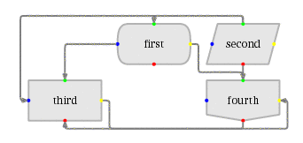
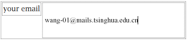
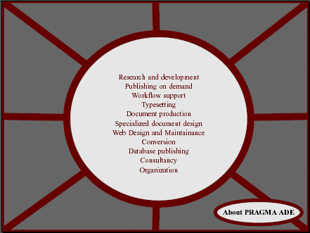

ConTeXt 是 TeX 的一种格式，是荷兰 Pragma-ADE 公司设计的一种高端的文档制造工具。用 ConTeXt 可以做出非常漂亮的PDF文档。特别适合做幻灯片和一些非正式的文档，你其实也可以用它写论文。它做出的PDF有多样的交互功能。你甚至可以用它作出一个PDF计算器！
这里有一些 ConTeXt 的资料和样例可以下载。如果你已经会用 LaTeX, 那么就很容易理解 ConTeXt 了，因为它们都建立在 TeX 之上，从本质上是相通的。
PRAGMA Advanced Document Engineering 是一家提供文档技术服务的公司, 主要提供 ConTeXt, PPCHTeX(一种处理化学文档的TeX工具), pdfTeX 的技术服务。ConTeXt, PPCHTeX, pdfTeX 的最新版本都可以在这里下载。
一个漂亮的介绍 ConTeXt 的 PDF 文件，言简意赅，屏幕浏览形式。也有纸张版
ConTeXt 的说明书。这个是屏幕浏览形式。也有纸张版
texexec 程序的手册。texexec 就是 ConTeXt 的一个脚本，编辑 ConTeXt 文档最好用 texexec 来调用 pdfTeX. 所以这个文档是用 ConTeXt 的人必读的。
这个小小的 PDF 介绍了 TeX 的字体的工作原理。介绍了 ConTeXt 的字体工作原理。怎样增加 ConTeXt 可用的字体。
介绍怎样在 ConTeXt 中完美的嵌入参数式图形，当然是借助于 MetaPost 了。前面部分有一个很漂亮的对 MetaPost 的说明。
介绍怎样用 MetaPost 提取矢量字体的轮廓然后用来制造漂亮的样式。比如这样的章节标题：
介绍怎样用 ConTeXt 制造流程图。看看下面这个流程图，漂亮吧？ 实际上作出这样的流程图在 ConTeXt 里是小菜一碟。

介绍怎样使用高级的PDF特性构造交互式PDF：交叉引用，文本框，JAVASCRIPT, 注解……
我以前还不知道PDF居然可以像网页一样工作!

以下是一些 ConTeXt 制造的幻灯片，非常漂亮！其中有些模板已 经在 ConTeXt 中提供，可以直接使用。
你知道 PDF 居然有这种功能吗？这是一个供程序员使用的后缀表达式计算器！
这个 PDF 实现了一个时钟，点击圆圈外面的部分时钟就会走动。
Hans Hagen 的一个很短但是非常漂亮的幻灯片。介绍了制作文档的5个步骤。
一个非常简短而漂亮的文档。说明了文档结构的各个组成部分。
非常眩的一个全屏PDF, 非常吸引顾客哦！

真的把程序变成了别人茶余饭后的娱乐啊。Knuth 看到了一定很高兴。呵呵。
一个显示 RGB, CMYK, HSB 色板的 PDF 文件。
Hans Hagen 的论文：“TeX 与 PDF 的完美结合”。
Hans Hagen 有关制造动态 PDF.
pdfTeX 作者 Han The Thanh 的毕业论文。讲述了 pdfTeX 中实现的 "font expansion"，一种稍微加宽字体从而达到间距调整目的的方法。从他的论文也许你可以体会到尖端的文档技术是怎样的 :)
Hans Hagen 介绍怎样用 ConTeXt 制造 presentation. 有他设计的几个幻灯模板的介绍。
Hans Hagen 介绍了一种 Visual Debugging 宏包，它重新定义了 TeX 最底层的宏接口，从而可以用图形的方式显示 TeX 的一举一动，每一个penalty, 每一个glue, 每一个 kern，每一个box！这个宏包本来是为 ConTeXt 设计的，但是也可以用来显示 plain TeX 和 LaTeX 的细节。不过我发现太复杂的 LaTeX 在使用这个的时候有一些问题。